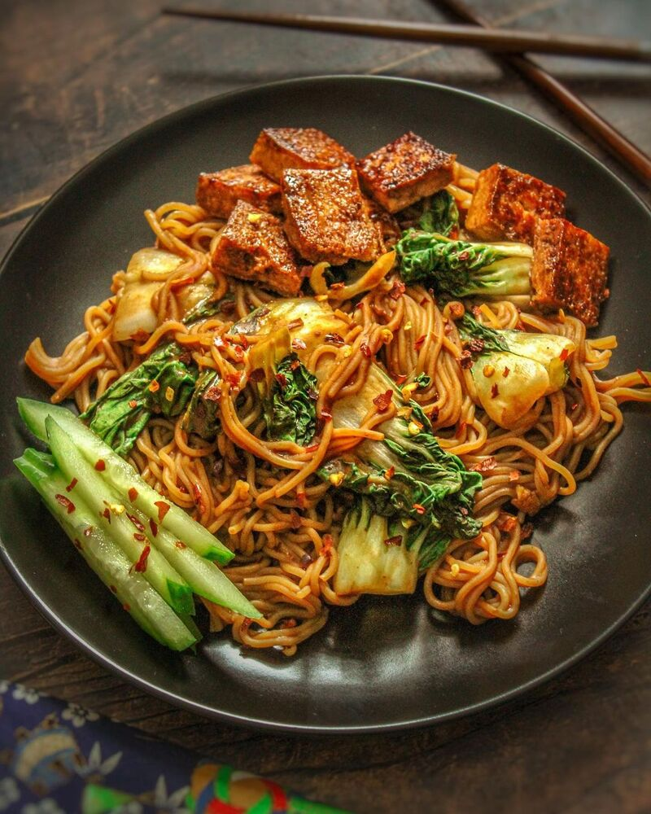

Peanut Butter Ramen!
Don't knock it till you try it 👍

Description
This is my peanut butter ramen recipe. I've been making this since I was in high school, and its a relatively popular and simple recipe thats easy to make and delicious.
It may sound weird at first, but trust me if you try it, you'll love it (unless you have a peanut allergy).
Ingredients
- You're favorite ramen noodle brand
- 2 tablespoons of peanut butter
- Sliced Lime
- Crushed Peanuts
- Bok Choi
- Optional(Tofu)
- Garlic Powder
- Onion Powder
- Paprika
- Black Pepper
Steps
- Prepare a pot of water and heat till boiling
- Once boiling, place your noodles in the pan and cook till the noodles are soft
- If you decide to use tofu, mix the tofu with your soy sauce and the spices and let it marinade.
- In a seperate pan, place cooking oil in the pain and begin to heat. Place the marinaded tofu in the pan, and pour a little soy sauce in the pan. Add in your bok choy, and drizzle some salt
and soy sauce over the bokchoy.
- Cook the tofu until a dark golden brown and move it to the side.
- Once the noodles are ready, place them in a bowl, and mix in the seasoning packets. Add your peanut butter and begin mixing it together.
- Once done, sprinkle crushed peanuts over the product. You can even add an egg if you want.
- Now add you tofu and lime, mix it in, and serve!
Return to the main page